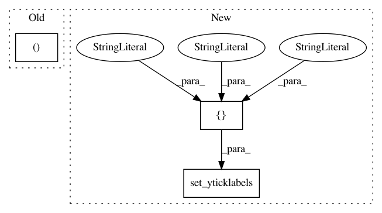

38512d92a8682a62e73c5b9e86366888be374532,dragonn/vis/__init__.py,,plot_ism,#Any#Any#Any#Any#Any#Any#,83
Before Change
plt.colorbar(hmap,ax=axes[1],orientation="horizontal")
if show==True:
plt.show()
return f,axes
def plot_seq_importance(grads, x, xlim=None, ylim=None, figsize=(25, 3),title="",snp_pos=0,show=True):
Plot sequence importance score
After Change
abs_highest=max([abs(ymin),abs(ymax)])
hmap=axes[1].imshow(ism_mat.T,extent=extent,vmin=-1*abs_highest, vmax=abs_highest, interpolation="nearest",aspect="auto")
axes[1].set_yticks(np.array([100,200,300,400]))
axes[1].set_yticklabels(["T","G","C","A"])
axes[1].set_xlabel("Sequence base")
if xlim!=None:
axes[0].set_xlim(xlim)
axes[1].set_xlim(xlim)
In pattern: SUPERPATTERN
Frequency: 3
Non-data size: 3
Instances
Project Name: kundajelab/dragonn
Commit Name: 38512d92a8682a62e73c5b9e86366888be374532
Time: 2019-05-29
Author: annashcherbina@gmail.com
File Name: dragonn/vis/__init__.py
Class Name:
Method Name: plot_ism
Project Name: rodluger/starry
Commit Name: b75b6d726d2379ed910a3ef31b2394ff2a4d8b84
Time: 2018-04-28
Author: rodluger@gmail.com
File Name: misc/stability/brgrid.py
Class Name:
Method Name: Ylm
Project Name: rodluger/starry
Commit Name: 73bf812cc5598a0e6efb20d11de6568a80125a21
Time: 2018-04-29
Author: rodluger@gmail.com
File Name: misc/stability/brgrid.py
Class Name:
Method Name: RMinusOneRPlusOne